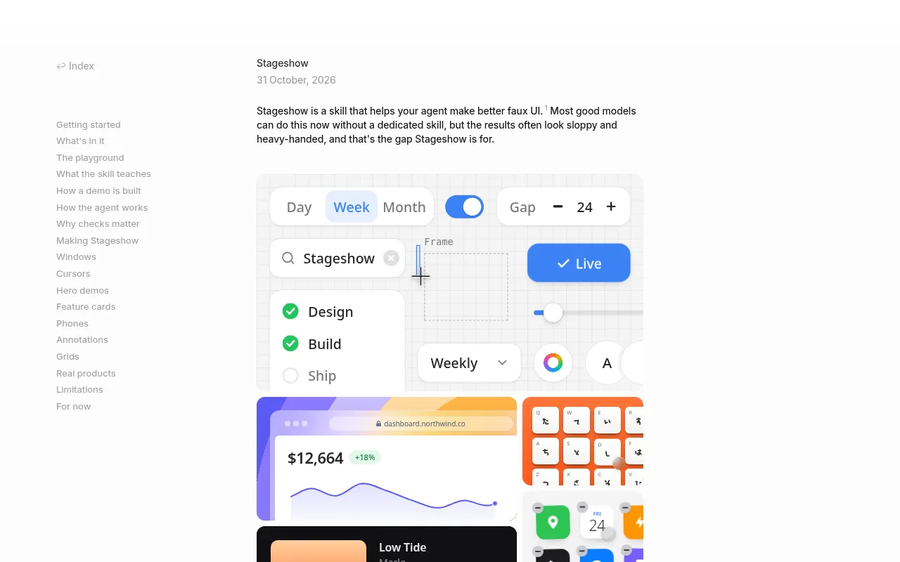
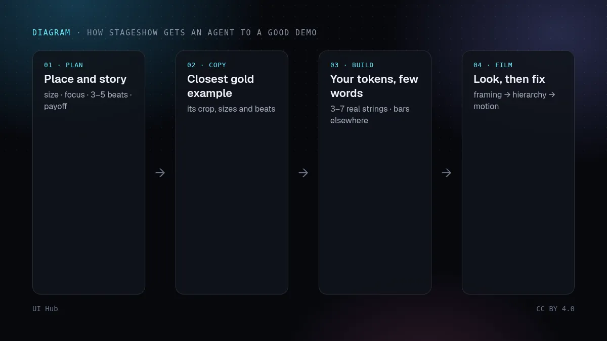
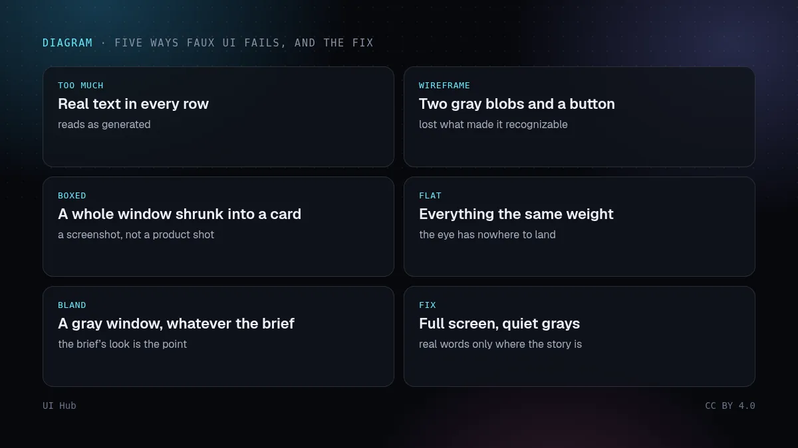

10 月 31 日，设计师 Benji Taylor 开源了 Stageshow，一个只做一件事的智能体技能：假产品界面（faux UI）。也就是落地页、功能卡片或文档首屏上那些缩小、简化过的产品画面，可以是一张静帧，也可以是一段带光标的短循环演示。他的观点是，好模型已经能画出这类画面，但结果往往显得笨重、一看就是生成的。Stageshow 想做的，是把设计师手工做这类画面时的上百个小决定写下来，让智能体也能做出这些决定。这条发布帖在 X 上两天内超过 130 万次浏览、2.4 万次收藏，说明很多团队都卡在同一个问题上。

Act API 的 Stage，按真实尺寸绘制的窗口和手机，以及 Roll、Count、Fly 等动效部件。它负责难做的部分，但刻意不提供外观，你要把自己的 Token 映射上去。film.mjs 用无头 Chrome 打开页面，拍成一张联系表；layout.mjs 检查文字和控件是否装得下。智能体看自己拍下的画面，先修最大的问题：取景，其次层级，再次动效，最后细节。
这些规则具体到可以检查。按演示实际显示的尺寸来设计：放在文案旁的首屏约 720 × 340，通栏首屏宽 900 到 1100，卡片 400 × 300，另外为 358px 宽的手机栏单独做一版紧凑设计。控制的是文字预算，而不是元素数量：通常 3 到 7 处真实文字，其余用占位条。让首屏窗口有 10% 到 40% 被裁出画面，并至少占画面宽度的三分之二。一个故事是三到五个节拍、10 到 16 秒；结果画面停留约两秒；数据不能在画面内倒退。另外，假应用的标题用 div，绝不用真正的标题标签，因为演示是嵌在别人页面的大纲里的。
组件包有用，但真正值得学的是这个技能的结构。它把一份有名字的失败清单、可复制的标杆示例，以及让智能体看见自己产出的方法放在一起。大多数设计技能只做到第一点。「避免杂乱」这种规则很容易同意，也很容易被忽略；但一张录下来的画面摆在标杆示例旁边，就很难忽略。如果你在给团队写设计技能，可以照搬这个结构：失败要有名字，示例要有数字，检查要能让智能体自己跑。
有两件事这个技能留给了你。第一是无障碍：一段自动播放、与其他内容并列、长达 10 到 16 秒的循环，按 WCAG 2.2.2 需要提供暂停方式；开启「减少动态效果」的读者应该看到海报帧，而不是动画。Stageshow 强调海报帧本身就要讲清故事，这让事情变简单，但接线要你自己做。第二是诚实：一张精致的假界面可能悄悄变成设计规格，或者承诺了一个还不存在的功能。只展示已经上线的东西，把示意图标注为示意图，真实产品变了就重新录。还要留意许可：代码是 MIT，但附带的应用图标和品牌标识仍归各自所有者。
npx skills add benjitaylor/skills --skill stageshow，然后启动演示场，把和你想法最接近的标杆示例录一遍。prefers-reduced-motion 下和缩略图里都用它。demo-plan.md（演示计划）
位置： 首页首屏，文案旁 · 720×340 · 紧凑版 358
焦点： 正在被指派的那一行任务
节拍： 打开菜单 → 选同事 → 头像落位 → 状态滚动更新
结果： 已指派的行停留 2 秒 · 海报帧 = 这一帧
文字： 任务标题 · 同事姓名 · 状态 （3 处真实文字）
无障碍： 暂停按钮 · 减少动态 → 海报帧 · role="img" + 名称
诚实： 只展示已上线功能 · 标注「示意图」
Stageshow 是越来越多设计技能中的一个；教智能体审美和 Claude 与 Cursor 的设计技能讲了怎么把它们组合起来。它的动效规则可以和恰到好处的动效对照着读，Linear 与 Vercel 落地页拆解说明了为什么落地页的第一张图应该是你的真实产品。演示上线前，用 AI 生成界面的无障碍检查过一遍。UI Hub 的技能库按角色列出了和 Stageshow 相邻的技能。